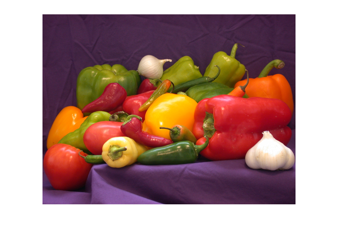
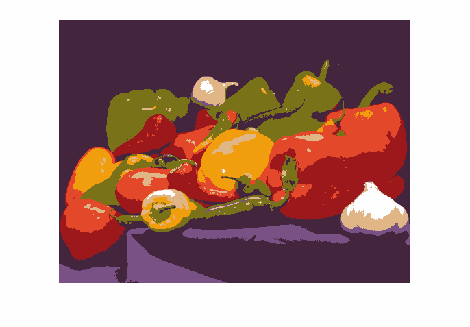

Python Basics (2024-01-29 - 2024-01-31)¶
Variables¶
[1]:
a = 42
[2]:
a
[2]:
42
[3]:
type(a)
[3]:
int
[4]:
a = 42.666
[5]:
type(a)
[5]:
float
[6]:
a
[6]:
42.666
[7]:
a = [1, 2, 'drei']
[8]:
type(a)
[8]:
list
[9]:
a
[9]:
[1, 2, 'drei']
Tuple unpacking
[10]:
a, b, c = 1, 2, 'drei'
[11]:
a
[11]:
1
[12]:
b
[12]:
2
[13]:
c
[13]:
'drei'
[14]:
a = b = c = 1
Swap two varibles?
[15]:
a = 1
b = 2
[16]:
tmp = a
a = b
b = tmp
[17]:
a, b
[17]:
(2, 1)
[18]:
a = 1
b = 2
[19]:
a, b = b, a
[20]:
a, b
[20]:
(2, 1)
Assignment Details¶
[21]:
a = 42
[22]:
id(a)
[22]:
139818180670696
[23]:
hex(id(a))
[23]:
'0x7f29f4fdf4e8'
[24]:
b = a
[25]:
id(b)
[25]:
139818180670696
[26]:
a = 666
[27]:
b
[27]:
42
[28]:
id(a)
[28]:
139817897762928
[29]:
id(b)
[29]:
139818180670696
Datatypes¶
Integers¶
[30]:
i = 2**32 - 1
[31]:
hex(i)
[31]:
'0xffffffff'
[32]:
bin(i)
[32]:
'0b11111111111111111111111111111111'
[33]:
i += 1
[34]:
bin(i)
[34]:
'0b100000000000000000000000000000000'
[35]:
i = 2**64 - 1
[36]:
bin(i)
[36]:
'0b1111111111111111111111111111111111111111111111111111111111111111'
[37]:
i += 1
[38]:
bin(i)
[38]:
'0b10000000000000000000000000000000000000000000000000000000000000000'
[39]:
type(i)
[39]:
int
[40]:
10**100
[40]:
10000000000000000000000000000000000000000000000000000000000000000000000000000000000000000000000000000
[41]:
id(i)
[41]:
139817896921728
[42]:
i += 1
[43]:
id(i)
[43]:
139817466913504
[44]:
a = 16
b = 0x10
[45]:
a
[45]:
16
[46]:
b
[46]:
16
[47]:
a + b
[47]:
32
[48]:
hex(b)
[48]:
'0x10'
[49]:
0x10 + 16
[49]:
32
[50]:
s = '16'
[51]:
type(s)
[51]:
str
[52]:
s
[52]:
'16'
[53]:
int(s)
[53]:
16
[54]:
int('0x10', 16)
[54]:
16
[55]:
3/2
[55]:
1.5
[56]:
3//2
[56]:
1
[57]:
3%2
[57]:
1
[58]:
10%3
[58]:
1
[59]:
12%3
[59]:
0
[60]:
10%4
[60]:
2
[61]:
2+3*4
[61]:
14
[62]:
2+(3*4)
[62]:
14
[63]:
(2+3)*4
[63]:
20
[64]:
10%3*2
[64]:
2
[65]:
(10%3)*2
[65]:
2
[66]:
10%(3*2)
[66]:
4
[67]:
help(round)
Help on built-in function round in module builtins:
round(number, ndigits=None)
Round a number to a given precision in decimal digits.
The return value is an integer if ndigits is omitted or None. Otherwise
the return value has the same type as the number. ndigits may be negative.
[68]:
round(3.142334567876545678765456787654, 3)
[68]:
3.142
Classes? Struct? Cell?¶
[69]:
p = {
'x': 1,
'y': 2,
'z': 3,
}
[70]:
type(p)
[70]:
dict
[71]:
p['x']
[71]:
1
[72]:
class point:
pass
[73]:
p = point()
p.x = 1
p.y = 2
p.z = 3
[74]:
type(p)
[74]:
__main__.point
[75]:
p.x
[75]:
1
[76]:
class point:
def __init__(self, x, y, z):
self.x = x
self.y = y
self.z = z
[77]:
p = point(1, 2, 3)
[78]:
p.x
[78]:
1
[79]:
import collections
[80]:
point = collections.namedtuple('point', ('x', 'y', 'z'))
[81]:
p = point(1, 2, 3)
[82]:
type(p)
[82]:
__main__.point
[83]:
### Boolean
[84]:
a = True
b = False
[85]:
a and b
[85]:
False
[86]:
a == b
[86]:
False
[87]:
a ^ b
[87]:
True
[88]:
a or b
[88]:
True
Compound Datatypes¶
List¶
[89]:
l = [1, 2.0, 'drei']
[90]:
for elem in l:
print(elem)
1
2.0
drei
[91]:
l.append(4)
[92]:
l
[92]:
[1, 2.0, 'drei', 4]
[93]:
l.append([1,2,3])
[94]:
l
[94]:
[1, 2.0, 'drei', 4, [1, 2, 3]]
[95]:
l.extend([4, 5, 6])
[96]:
l
[96]:
[1, 2.0, 'drei', 4, [1, 2, 3], 4, 5, 6]
[97]:
l += [7, 8, 'neun']
[98]:
l
[98]:
[1, 2.0, 'drei', 4, [1, 2, 3], 4, 5, 6, 7, 8, 'neun']
[99]:
l.pop(1)
[99]:
2.0
[100]:
l
[100]:
[1, 'drei', 4, [1, 2, 3], 4, 5, 6, 7, 8, 'neun']
[101]:
l[2]
[101]:
4
[102]:
l
[102]:
[1, 'drei', 4, [1, 2, 3], 4, 5, 6, 7, 8, 'neun']
[103]:
len(l)
[103]:
10
[104]:
l[9]
[104]:
'neun'
[105]:
try:
l[10]
except Exception as e:
print(type(e), e)
<class 'IndexError'> list index out of range
[106]:
l.insert(0, 'anfang')
[107]:
l
[107]:
['anfang', 1, 'drei', 4, [1, 2, 3], 4, 5, 6, 7, 8, 'neun']
[108]:
l.insert(1, 'vor eins')
[109]:
l
[109]:
['anfang', 'vor eins', 1, 'drei', 4, [1, 2, 3], 4, 5, 6, 7, 8, 'neun']
[110]:
1000 in l
[110]:
False
Iteration¶
[111]:
for elem in l:
print(elem)
anfang
vor eins
1
drei
4
[1, 2, 3]
4
5
6
7
8
neun
Dictionary¶
[112]:
d = {
'one': 1,
'two': 2,
}
[113]:
type(d)
[113]:
dict
[114]:
d['one']
[114]:
1
[115]:
try:
d['three']
except Exception as e:
print(type(e), e)
<class 'KeyError'> 'three'
[116]:
d['three'] = 3
[117]:
d['three']
[117]:
3
[118]:
d['four'] = 'vier'
[119]:
d
[119]:
{'one': 1, 'two': 2, 'three': 3, 'four': 'vier'}
[120]:
d['four'] = 4
[121]:
for elem in d:
print(elem)
one
two
three
four
[122]:
for elem in d.keys():
print(elem)
one
two
three
four
[123]:
for elem in d.values():
print(elem)
1
2
3
4
[124]:
for elem in d.items():
print(elem)
('one', 1)
('two', 2)
('three', 3)
('four', 4)
[125]:
del d['one']
[126]:
'one' in d
[126]:
False
[127]:
'two' in d
[127]:
True
Set¶
[128]:
s = {1, 2, 'drei'}
[129]:
type(s)
[129]:
set
[130]:
2 in s
[130]:
True
[131]:
s.add(4)
[132]:
4 in s
[132]:
True
[133]:
s.remove(4)
[134]:
4 in s
[134]:
False
[135]:
s1 = {1, 2, 3, 4}
s2 = {3, 4, 5, 6}
[136]:
s1 | s2
[136]:
{1, 2, 3, 4, 5, 6}
[137]:
s1 & s2
[137]:
{3, 4}
[138]:
s1 ^ s2
[138]:
{1, 2, 5, 6}
[139]:
s.add('fuenf')
[140]:
s
[140]:
{1, 2, 'drei', 'fuenf'}
while Loops¶
[141]:
number = 0
while number < 5:
print(number)
number = number + 1
0
1
2
3
4
[142]:
summe = 0
number = 1
while number <= 100:
summe = summe + number
number = number + 1
print(summe)
5050
[143]:
sum(range(1, 101))
[143]:
5050
range()¶
[144]:
for num in range(5):
print(num)
0
1
2
3
4
[145]:
for num in range(0, 5):
print(num)
0
1
2
3
4
[146]:
for num in range(3, 5):
print(num)
3
4
[147]:
for num in range(2, 10, 2):
print(num)
2
4
6
8
[148]:
num = 2
while num < 10:
print(num)
num += 2
2
4
6
8
Wuerfeln¶
[149]:
import random
[150]:
random.randrange(1, 7)
[150]:
3
[151]:
n_tries = 1
MAX_TRIES = 3
while n_tries <= MAX_TRIES:
eyes = random.randrange(1, 7)
if eyes == 6:
print(f'yay after %d tries' % n_tries)
break
n_tries += 1
else:
print('fuck', n_tries)
fuck 4
Primeness, while¶
[152]:
number = 9
divisor_candidate = 2
while divisor_candidate < number:
if number % divisor_candidate == 0:
print(divisor_candidate, 'is a divisor')
print('not prime')
break
divisor_candidate += 1
else:
print('prime')
3 is a divisor
not prime
for¶
[153]:
for name in ['Caro', 'Johanna', 'Eva', 'Jörg']:
print(name)
Caro
Johanna
Eva
Jörg
[154]:
d = {
'one': 1,
'two': 2,
}
[155]:
for elem in d:
print(elem)
one
two
[156]:
s = { 'one', 'two', 3 }
for elem in s:
print(elem)
3
two
one
C-like iteration: index-based
[157]:
array = [ 1, 2, 3, 4 ]
[158]:
del i
[159]:
for i in range(len(array)):
print(array[i])
1
2
3
4
[160]:
print(i)
3
[161]:
for elem in array:
print(elem)
1
2
3
4
else¶
[162]:
haystack = ['straw', 'mouse', 'straw', 'needle', 'straw']
for item in haystack:
if item == 'needle':
print('needle found')
break
else:
print("couldn't find needle")
needle found
[163]:
haystack = ['straw', 'mouse', 'straw', 'straw']
for item in haystack:
if item == 'needle':
print('needle found')
break
else:
print("couldn't find needle")
couldn't find needle
The range function¶
[164]:
numbers = [0, 1, 2, 3, 4]
for elem in numbers:
print(elem)
0
1
2
3
4
[165]:
for elem in range(5):
print(elem)
0
1
2
3
4
[166]:
for elem in range(0, 5, 1):
print(elem)
0
1
2
3
4
[167]:
for elem in range(2, 9, 3):
print(elem)
2
5
8
[168]:
for elem in range(2, 10):
print(elem)
2
3
4
5
6
7
8
9
Functions¶
[169]:
a, b = 1, 2
[170]:
if a < b:
print(b)
else:
print(a)
2
[171]:
c, d = 33, 12
[172]:
if c < d:
print(d)
else:
print(c)
33
[173]:
def maximum(lhs, rhs):
if lhs < rhs:
max = rhs
else:
max = lhs
return max
[174]:
a, b = 1, 2
[175]:
m = maximum(a, b)
[176]:
print(m)
2
[177]:
def foo(bar):
bar = 666
[178]:
a = 42
[179]:
foo(a)
[180]:
a
[180]:
42
[181]:
type(maximum)
[181]:
function
[182]:
type(a)
[182]:
int
[183]:
a = maximum
[184]:
type(a)
[184]:
function
[185]:
a(1, 2)
[185]:
2
Sequences¶
[186]:
l = ['prime-function.py', '1', '2', '53', '57', '9']
[187]:
l[1:6]
[187]:
['1', '2', '53', '57', '9']
[188]:
l[1:3]
[188]:
['1', '2']
[189]:
l[1:]
[189]:
['1', '2', '53', '57', '9']
Misc Crap¶
[190]:
import ipaddress
[191]:
addr = ipaddress.ip_address('192.168.1.1')
[192]:
addr
[192]:
IPv4Address('192.168.1.1')
[193]:
addr.is_loopback
[193]:
False
[194]:
addr = ipaddress.ip_address('127.0.0.1')
[195]:
addr.is_loopback
[195]:
True
[196]:
addr.exploded
[196]:
'127.0.0.1'
[197]:
try:
addr = ipaddress.ip_address('111')
except ValueError:
print('das ist keine gueltige IP addresse')
das ist keine gueltige IP addresse
Sequential Datatyoes¶
[198]:
[i*5 for i in range(6)]
[198]:
[0, 5, 10, 15, 20, 25]
[199]:
v = [1, 2, 3]
[200]:
v*5
[200]:
[1, 2, 3, 1, 2, 3, 1, 2, 3, 1, 2, 3, 1, 2, 3]
[201]:
import numpy
[202]:
vector = numpy.array([1,2,3])
[203]:
vector*5
[203]:
array([ 5, 10, 15])
[204]:
' '*4
[204]:
' '
[205]:
text = 'Hello World'
[206]:
try:
text[20]
except Exception as e:
print(type(e), e)
<class 'IndexError'> string index out of range
[207]:
text[-1]
[207]:
'd'
[208]:
text[-11]
[208]:
'H'
[209]:
try:
text[-12]
except Exception as e:
print(type(e), e)
<class 'IndexError'> string index out of range
[210]:
a_tuple = (1, 'one', 1.0)
[211]:
a_tuple[1][1]
[211]:
'n'
References, (Im)mutability, And Memory Management¶
[212]:
a = 42
[213]:
type(a)
[213]:
int
[214]:
hex(id(a))
[214]:
'0x7f29f4fdf4e8'
[215]:
import sys
sys.getsizeof(a)
[215]:
28
[216]:
a = [1,2,3]
[217]:
del a
[218]:
a = 42
[219]:
id(a)
[219]:
139818180670696
[220]:
b = a
[221]:
id(b)
[221]:
139818180670696
[222]:
a += 1
[223]:
a
[223]:
43
[224]:
b
[224]:
42
[225]:
id(a)
[225]:
139818180670728
[226]:
t = (1,2,3)
[227]:
try:
t.append(4)
except Exception as e:
print(type(e), e)
<class 'AttributeError'> 'tuple' object has no attribute 'append'
[228]:
l1 = [1,2,3]
[229]:
l2 = l1
[230]:
id(l1)
[230]:
139817467481600
[231]:
id(l2)
[231]:
139817467481600
[232]:
l1.append(4)
[233]:
id(l1)
[233]:
139817467481600
[234]:
id(l2)
[234]:
139817467481600
[235]:
l1
[235]:
[1, 2, 3, 4]
[236]:
l2
[236]:
[1, 2, 3, 4]
[237]:
l1
[237]:
[1, 2, 3, 4]
[238]:
def modifyit(seq):
seq.append(5)
[239]:
modifyit(l1)
[240]:
l1
[240]:
[1, 2, 3, 4, 5]
Miscellaneous String Methods¶
[241]:
s = 'abc'
[242]:
s.isalpha()
[242]:
True
[243]:
'123'.isdigit()
[243]:
True
[244]:
'ABC'.isupper()
[244]:
True
[245]:
s = 'mississippi'
[246]:
s.count('ss')
[246]:
2
[247]:
s.find('ss')
[247]:
2
[248]:
pos = s.find('ss')
[249]:
pos
[249]:
2
[250]:
s.find('ss', pos+1)
[250]:
5
[251]:
s.find('x')
[251]:
-1
[252]:
s.index('ss')
[252]:
2
[253]:
try:
s.index('x')
except Exception as e:
print(type(e), e)
<class 'ValueError'> substring not found
[254]:
filename = 'file.csv'
filename.endswith('.csv')
[254]:
True
[255]:
line = 'one:two:three'
[256]:
line.split(':')
[256]:
['one', 'two', 'three']
[257]:
a, b, c = line.split(':')
[258]:
a
[258]:
'one'
[259]:
line.split(':', 1)
[259]:
['one', 'two:three']
[260]:
elems = ['one', 'two', 'three']
[261]:
':'.join(elems)
[261]:
'one:two:three'
[262]:
s = ' \t \n sjdgosi gfosvbsisvbsok \r '
[263]:
s.strip()
[263]:
'sjdgosi gfosvbsisvbsok'
[264]:
s.lstrip()
[264]:
'sjdgosi gfosvbsisvbsok \r '
[265]:
s.rstrip()
[265]:
' \t \n sjdgosi gfosvbsisvbsok'
[266]:
s = ' '
[267]:
s.strip()
[267]:
''
[268]:
len(s.strip())
[268]:
0
[269]:
s = ' xx '
[270]:
s.strip()
[270]:
'xx'
[271]:
s
[271]:
' xx '
os, Und Einlesen Von Directories¶
os.listdir(), os.path.join(), os.sep¶
[272]:
import os
[273]:
files = os.listdir('data')
[274]:
files
[274]:
['file1.csv', 'file2.csv', 'nochwas.txt']
[275]:
csv_files = []
for f in files:
if f.endswith('.csv'):
csv_files.append(f)
[276]:
csv_files
[276]:
['file1.csv', 'file2.csv']
Das ganze mehr PYTHONIC, bitte!
[320]:
csv_files = [os.path.join('data', f) for f in os.listdir('data') if f.endswith('.csv')]
[309]:
csv_files
[309]:
['data/file1.csv', 'data/file2.csv']
os.walk()¶
[321]:
for elem in os.walk('data'):
print(elem)
('data', ['subdir1', 'subdir2'], ['file1.csv', 'file2.csv', 'nochwas.txt'])
('data/subdir1', [], ['file1.csv', 'file2.csv'])
('data/subdir2', [], ['file1.csv', 'file2.csv'])
[327]:
csv_files = []
for dir, subdirs, files in os.walk('data'):
for f in files:
if f.endswith('.csv'):
csv_files.append(os.path.join(dir, f))
[328]:
csv_files
[328]:
['data/file1.csv',
'data/file2.csv',
'data/subdir1/file1.csv',
'data/subdir1/file2.csv',
'data/subdir2/file1.csv',
'data/subdir2/file2.csv']
[329]:
os.sep
[329]:
'/'
pathlib¶
[331]:
import pathlib
[340]:
mein_dir = 'data'
[337]:
mein_csv_file = os.path.join(mein_dir,'file1.csv')
[339]:
mein_csv_file
[339]:
'data/file1.csv'
Path?
[341]:
mein_dir = pathlib.Path('data')
[343]:
type(mein_dir)
[343]:
pathlib.PosixPath
[345]:
mein_dir / 'subdir' / 'file1.csv'
[345]:
PosixPath('data/subdir/file1.csv')
Iteration¶
[350]:
for elem in range(5):
print(elem)
0
1
2
3
4
[355]:
for elem in [0, 1, 2, 3, 4]:
print(elem)
0
1
2
3
4
[356]:
r = range(3)
[357]:
type(r)
[357]:
range
[358]:
r
[358]:
range(0, 3)
[360]:
for elem in r:
print(elem)
0
1
2
[361]:
r = range(3)
[363]:
it = iter(r)
[364]:
type(it)
[364]:
range_iterator
[366]:
next(it)
[366]:
0
[367]:
next(it)
[367]:
1
[368]:
next(it)
[368]:
2
[370]:
try:
next(it)
except StopIteration as e:
print(type(e), e)
<class 'StopIteration'>
[371]:
l = [0, 1, 2]
[372]:
it = iter(l)
[373]:
type(it)
[373]:
list_iterator
[374]:
next(it)
[374]:
0
[375]:
next(it)
[375]:
1
[376]:
next(it)
[376]:
2
[378]:
try:
next(it)
except StopIteration as e:
print(type(e), e)
<class 'StopIteration'>
[384]:
def null_eins_zwei():
print('start, yield 0')
yield 0
print('yield 1')
yield 1
print('yield 2')
yield 2
print('end')
[385]:
seq = null_eins_zwei()
[386]:
seq
[386]:
<generator object null_eins_zwei at 0x7f296befbc40>
[387]:
it = iter(seq)
[388]:
next(it)
start, yield 0
[388]:
0
[389]:
next(it)
yield 1
[389]:
1
[390]:
next(it)
yield 2
[390]:
2
[392]:
try:
next(it)
except StopIteration as e:
print(type(e), e)
<class 'StopIteration'>
More About Lists¶
[393]:
l = [2, 3, 5]
[394]:
l.append(100)
[395]:
l
[395]:
[2, 3, 5, 100]
[396]:
l.extend([2, 1, 6])
[397]:
l
[397]:
[2, 3, 5, 100, 2, 1, 6]
[398]:
s = {500, 300, 234}
[399]:
for elem in s:
print(elem)
234
500
300
[400]:
l.extend(s)
[401]:
l
[401]:
[2, 3, 5, 100, 2, 1, 6, 234, 500, 300]
[402]:
l.extend(range(3, 15, 3))
[403]:
l
[403]:
[2, 3, 5, 100, 2, 1, 6, 234, 500, 300, 3, 6, 9, 12]
[404]:
l.sort()
[405]:
l
[405]:
[1, 2, 2, 3, 3, 5, 6, 6, 9, 12, 100, 234, 300, 500]
[407]:
import random
[408]:
random.randrange(1, 7)
[408]:
2
[409]:
random.shuffle(l)
[410]:
l
[410]:
[12, 6, 2, 5, 100, 3, 6, 234, 3, 300, 500, 9, 1, 2]
[418]:
[random.randrange(1,7) for _ in range(10)]
[418]:
[4, 5, 6, 3, 2, 5, 6, 2, 2, 5]
[422]:
l.reverse()
[423]:
l
[423]:
[2, 1, 9, 500, 300, 3, 234, 6, 3, 100, 5, 2, 6, 12]
[424]:
s = 'abc'
[427]:
list(reversed(l))
[427]:
[12, 6, 2, 5, 100, 3, 6, 234, 3, 300, 500, 9, 1, 2]
[428]:
list(range(3))
[428]:
[0, 1, 2]
More About Sets¶
[429]:
s = {2, 1, 3}
[430]:
s = {}
[431]:
type(s)
[431]:
dict
[432]:
s = set()
[433]:
type(s)
[433]:
set
[434]:
s.add(500)
[435]:
s
[435]:
{500}
[436]:
s.add(100)
[437]:
s
[437]:
{100, 500}
[438]:
s.add(200)
[439]:
s.remove(500)
[440]:
200 in s
[440]:
True
[441]:
for elem in s:
print(elem)
100
200
[442]:
s1 = {1, 2, 3, 4}
s2 = {3, 4, 5, 6}
[443]:
s1& s2
[443]:
{3, 4}
[444]:
s1 | s2
[444]:
{1, 2, 3, 4, 5, 6}
More About Dictionaries¶
[445]:
d = {
'one': 1,
'two': 2,
}
[446]:
d['three'] = 'drei'
[447]:
d
[447]:
{'one': 1, 'two': 2, 'three': 'drei'}
[448]:
del d['three']
[450]:
'three' not in d
[450]:
True
[452]:
try:
d['three']
except Exception as e:
print(type(e), e)
<class 'KeyError'> 'three'
[453]:
v = d.get('one')
[454]:
v
[454]:
1
[455]:
v = d.get('three')
[458]:
print(v)
None
[461]:
v = d.get('three')
if v is not None:
print(v)
else:
v = 3
print(v)
3
[462]:
v = d.get('three', 3)
[464]:
v
[464]:
3
[465]:
v = d.get('three')
if v is not None:
print(v)
else:
d['three'] = 3
print(d['three'])
3
[466]:
v = d.setdefault('four', 4)
v
[466]:
4
[467]:
d
[467]:
{'one': 1, 'two': 2, 'three': 3, 'four': 4}
Dictionary Iteration¶
[468]:
for elem in d:
print(elem)
one
two
three
four
[469]:
'one' in d
[469]:
True
[471]:
for elem in d.keys():
print(elem)
one
two
three
four
[472]:
for elem in d.values():
print(elem)
1
2
3
4
[474]:
for elem in d.items():
print(elem)
('one', 1)
('two', 2)
('three', 3)
('four', 4)
[475]:
for elem in d.items():
k = elem[0]
v = elem[1]
print(f'key:{k}, value:{v}')
key:one, value:1
key:two, value:2
key:three, value:3
key:four, value:4
[476]:
for k, v in d.items():
print(f'key:{k}, value:{v}')
key:one, value:1
key:two, value:2
key:three, value:3
key:four, value:4
[477]:
len(d)
[477]:
4
[478]:
d
[478]:
{'one': 1, 'two': 2, 'three': 3, 'four': 4}
[479]:
d['one'] = 'eins'
[480]:
d
[480]:
{'one': 'eins', 'two': 2, 'three': 3, 'four': 4}
[482]:
other = { 'three': 'drei', 'four': 'vier', 'five': 'fuenf'}
[483]:
d.update(other)
[484]:
d
[484]:
{'one': 'eins', 'two': 2, 'three': 'drei', 'four': 'vier', 'five': 'fuenf'}
[485]:
type(d)
[485]:
dict
[486]:
dict()
[486]:
{}
[487]:
kvpairs = [('eins', 1), ('zwei', 2)]
[488]:
dict(kvpairs)
[488]:
{'eins': 1, 'zwei': 2}
numpy, scikit-learn¶
[492]:
import PIL.Image
[493]:
img = PIL.Image.open('color-reduction/veggie.png')
[495]:
img
[495]:

[496]:
import numpy
[499]:
img_array = numpy.array(img)
[502]:
img_array.shape
[502]:
(477, 686, 4)
One point in the middle of the cube
[501]:
img_array[350,500]
[501]:
array([107, 68, 112, 255], dtype=uint8)
[509]:
rgb = img_array[:,:,:3]
[512]:
alpha = img_array[:,:,3:]
[518]:
x, y, z = rgb.shape
[519]:
x
[519]:
477
[520]:
y
[520]:
686
[521]:
z
[521]:
3
[531]:
rgb_linear = rgb.reshape(((x*y), z))
[532]:
rgb_linear
[532]:
array([[255, 255, 255],
[255, 255, 255],
[255, 255, 255],
...,
[255, 255, 255],
[255, 255, 255],
[255, 255, 255]], dtype=uint8)
[533]:
from sklearn.cluster import KMeans
[534]:
km = KMeans(n_clusters=8)
[535]:
km.fit(rgb_linear)
[535]:
KMeans()In a Jupyter environment, please rerun this cell to show the HTML representation or trust the notebook.
On GitHub, the HTML representation is unable to render, please try loading this page with nbviewer.org.
KMeans()
[537]:
km.cluster_centers_
[537]:
array([[ 67.18423981, 37.51866902, 61.40779841],
[254.94278979, 254.7484102 , 254.52017749],
[121.71821931, 114.48415009, 25.61361798],
[226.10754686, 72.97606427, 41.93141702],
[225.5569347 , 182.5296816 , 135.4875877 ],
[122.85174112, 81.87099894, 132.85349982],
[241.35345614, 158.73043954, 14.19387197],
[156.7373525 , 24.19961382, 27.95700493]])
[540]:
km.labels_
[540]:
array([1, 1, 1, ..., 1, 1, 1], dtype=int32)
[543]:
len(km.labels_) == x*y
[543]:
True
[544]:
set(km.labels_)
[544]:
{0, 1, 2, 3, 4, 5, 6, 7}
[561]:
#for l in km.labels_:
# rgb_linear[idx]??? = km.cluster_centers_[l]
So wie jetzt?!?!?!?!?
[547]:
pixels = [
[2, 3, 4],
[1,2,3],
[4,5,6],
[45,23,3],
]
centers = [
[3,2,3],
[3,1,6],
[8,9,1],
]
labels = [0,2,1,0]
[552]:
names = ['Joerg', 'Isi', 'Johanna']
[553]:
for name in names:
print(name)
Joerg
Isi
Johanna
[555]:
for idx, name in enumerate(names):
print(idx, name)
0 Joerg
1 Isi
2 Johanna
[569]:
for idx, label in enumerate(labels):
pixels[idx] = centers[label]
[560]:
pixels
[560]:
[[3, 2, 3], [8, 9, 1], [3, 1, 6], [3, 2, 3]]
Weiter mit richtigen Bildern …
Austauschen der einzelenen Pixel auf ihr reduzierted Center. Dabei wird das urspruengliche rgb veraendert, da rgb_linear durch reshape() nur ein alternativer View auf das gleiche Memory ist.
[562]:
for idx, label in enumerate(km.labels_):
rgb_linear[idx] = km.cluster_centers_[label]
[563]:
reduced_array = numpy.concatenate((rgb, alpha), axis=2)
[564]:
reduced_img = PIL.Image.fromarray(reduced_array)
[567]:
reduced_img
[567]:

[568]:
reduced_img.save('color-reduction/reduced-veggie.png')